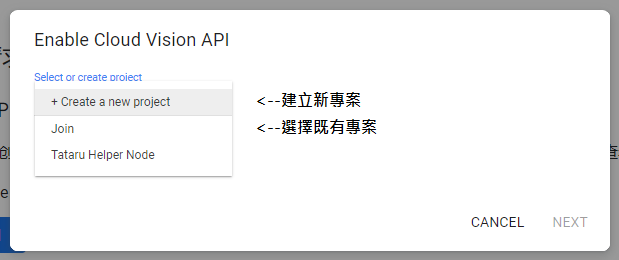
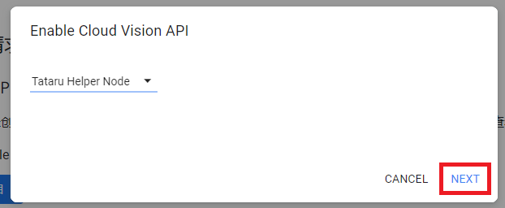
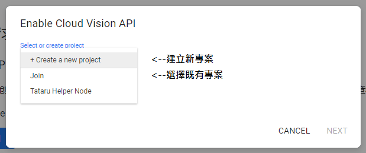
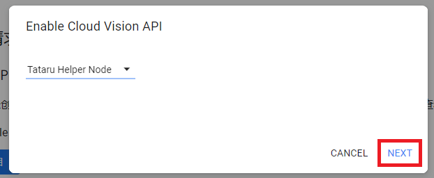
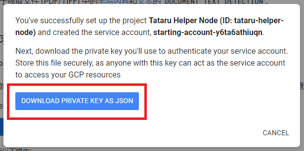

註1：Google Vision需綁定信用卡，沒信用卡或不想綁定者請無視本功能
註2：Google Vision每個月有1000次的免費使用次數，超過後每1000張會額外收費(
查看定價
)
-
前往
Google Cloud Platform官網
，點選【免費開始使用】啟用Google Cloud
Platform服務，公司資訊隨便填就好，本功能需使用Google帳號，若沒有Google帳號請建立一個
-
前往
Cloud Vision API說明文件
，點選右上角的【Language】將網頁切換成中文，然後點選【登入】登入您的Google帳號，已登入者請看下一步
-
登入後再次前往
Cloud Vision API說明文件
，展開【文本检测请求】下方的+號，然後點選【设置项目】按鈕(沒看到按鈕的話請按F5重新整理頁面)，依照指示選擇專案(若無專案請點選【+
Create a new project】建立一個新專案，名字隨意)，選擇後按NEXT繼續

 




-
等待一段時間後會顯示這個視窗，按下【DOWNLOAD PRIVATE KEY AS JSON】按鈕下載憑證檔案(.json檔案)

- 用記事本打開憑證檔案，全選複製裡面所有的內容(Ctrl+A --> Ctrl+C)
-
開啟Tataru Helper
Node設定，點選【系統】，將剛剛複製的憑證文字貼在【設定Google憑證】下方的輸入欄位，按下【儲存Google憑證】即可使用Google
Vision擷取螢幕文字，儲存的憑證會永久保存，不必再重新輸入

-
憑證檔案請妥善保管，除非你想和他人共用您的信用卡額度否則千萬不要和他人分享您的憑證檔案，若想移除憑證請至
這裡
移除服務帳號即可，移除後須利用上述步驟重新取得憑證才能繼續使用Google Vision服務